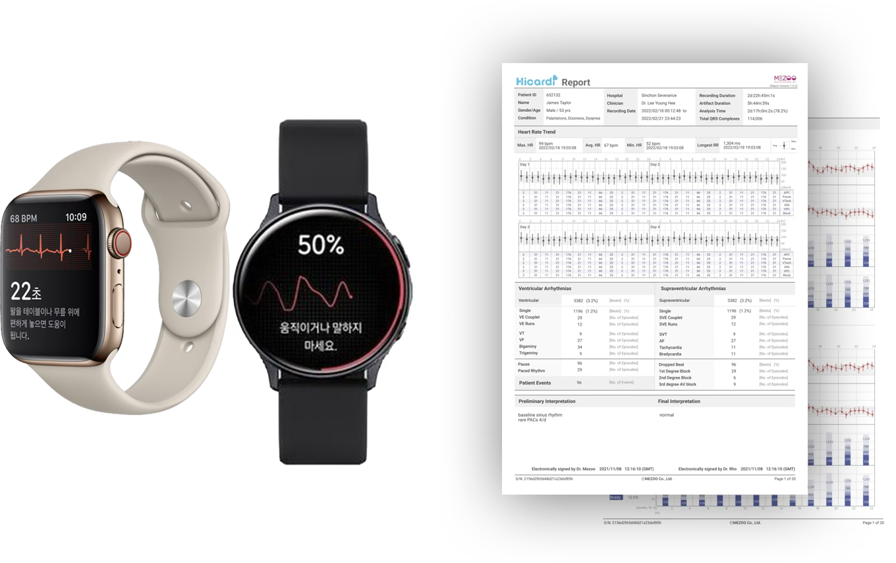
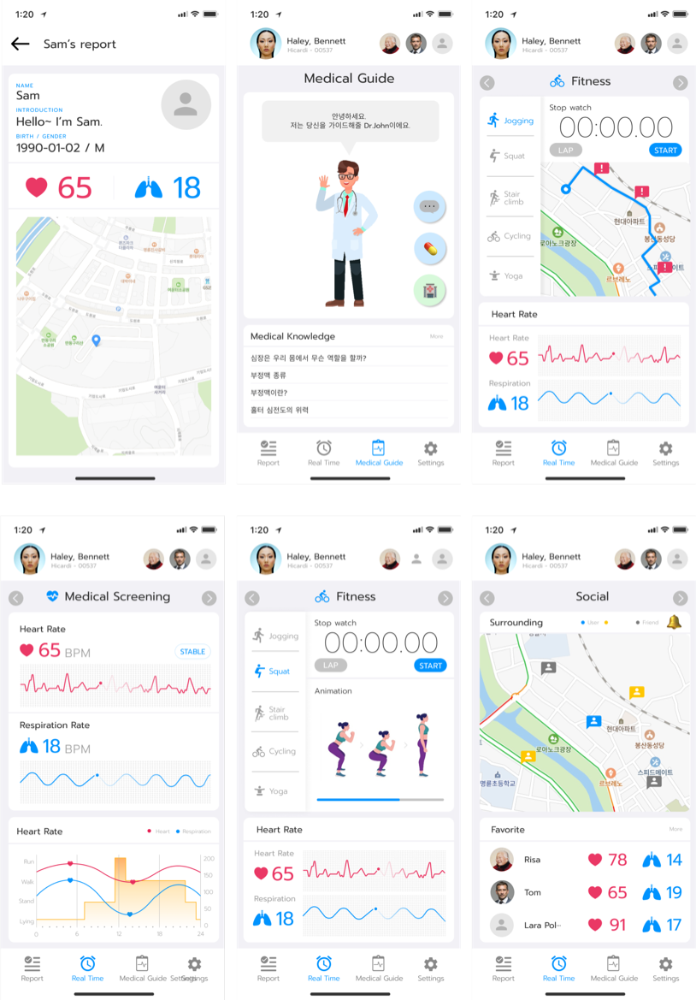
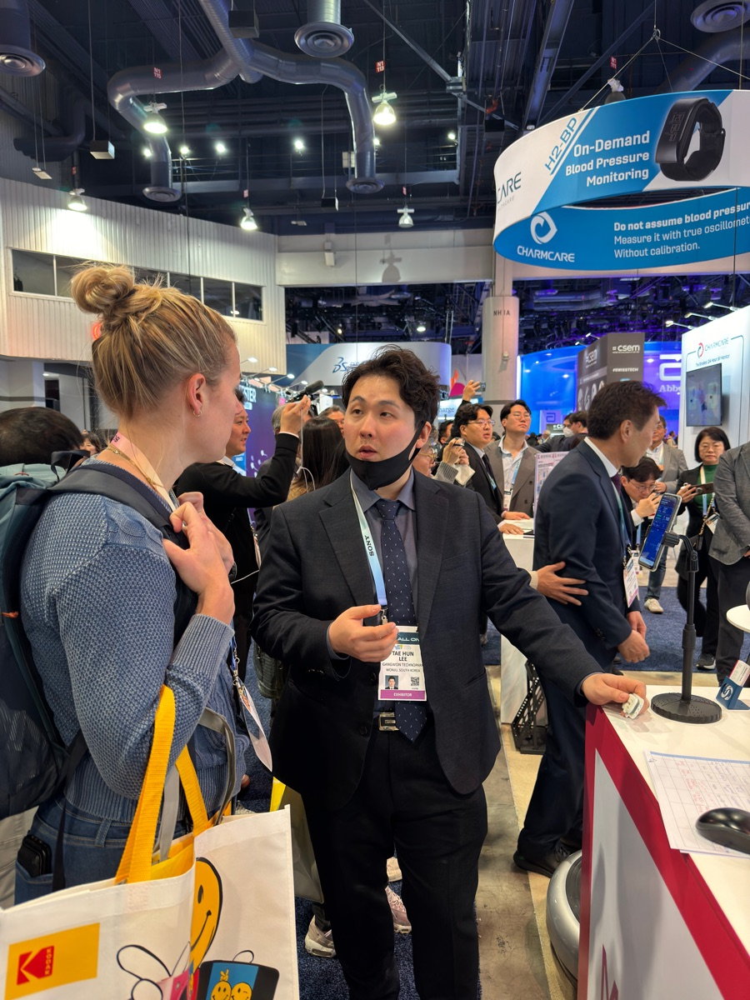
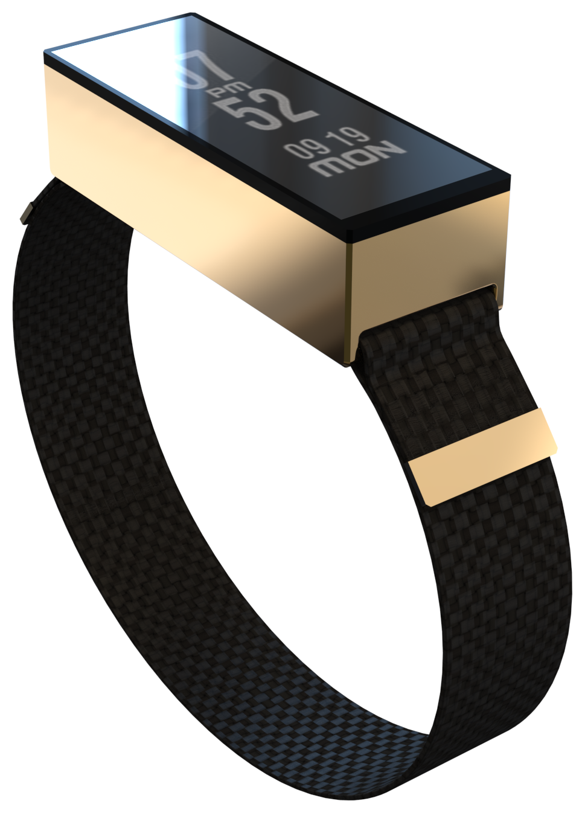

MEZOO의 하이카디는 원래 의료 현장을 위한 기기였다. 하지만 일반 사용자도 자신의 심전도를 기록하고, 운동이나 일상 활동과 함께 건강 상태를 관리하고 싶어했다.
의료기기를 웰니스 앱으로 가져오는 것 — 이전에 없던 카테고리를 만드는 일이었다.

기존 웰니스 앱들은 심전도를 다루지 않았고, 의료 앱들은 일상적으로 쓰기엔 너무 무거웠다. 그 사이 어딘가에서 새로운 톤을 찾아야 했다.
심전도라는 의료 데이터를, 일반 사용자에게 부담스럽지 않게 전달할 방법이 필요했다.
혼자 기록만 하는 앱이 아니라, 지인과 건강 정보를 나누고 싶어하는 사용자 니즈가 있었다.
단순 기록 앱이 아니라, 닥터존이라는 AI 비서가 사용자의 심전도와 활동 데이터를 바탕으로 건강 상태를 안내해주는 방식으로 설계했다. 여기에 소셜 공유 기능을 더해 혼자 쓰는 앱에서 벗어나게 했다.

참고할 만한 심전도 기반 웰니스 앱이 없어, 기존 웰니스 앱들을 폭넓게 조사하며 이 카테고리만의 차별점을 찾아나갔다. 그 위에 AI 비서 컨셉을 얹었다.
같은 심전도 데이터라도 "측정값"으로 보여주느냐 "오늘의 컨디션"으로 보여주느냐에 따라 사용자가 느끼는 부담이 완전히 달라졌다. AI 비서 캐릭터는 그 온도를 조절하는 장치였다.
존재하지 않던 카테고리를 만들 때는, 기능보다 먼저 이 앱이 사용자에게 어떤 존재로 느껴져야 하는지를 정의하는 게 우선이라는 걸 배웠다.
Dr. Jone은 메디카 박람회에서 실제로 시연·구현됐다. 존재하지 않던 카테고리였던 만큼, 실제로 작동하는 걸 보여주는 것 자체가 검증이었다.

